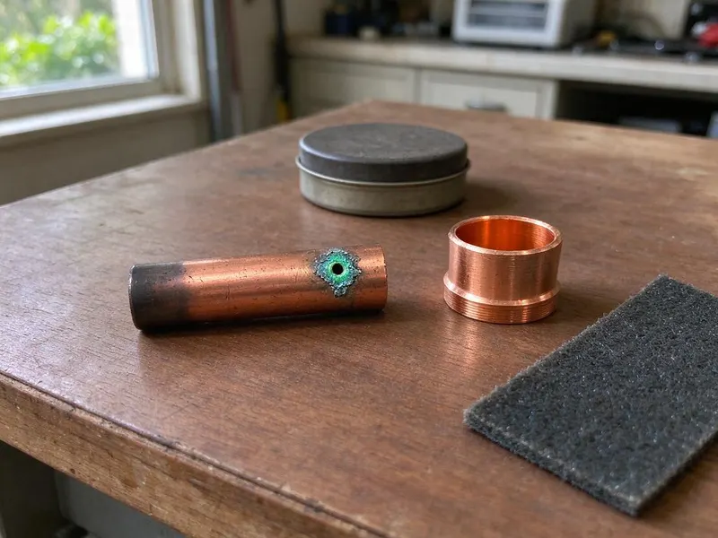

Underground Pipe Repair in Cedar Park, TX
Facing issues with buried pipes in Cedar Park, TX? DFJ Plumbing provides expert underground pipe repair services to restore your plumbing system.
- Fast Leak Detection
- Trenchless Repair Options
- Foundation Protection
- Code Compliant Fixes
Expert Underground Pipe Solutions in Cedar Park, TX.
Our skilled technicians are ready to diagnose and repair your buried plumbing with minimal disruption.
Trusted Underground Pipe Repair in Cedar Park, TX
At DFJ Plumbing, we understand the complexities of underground pipe repair, especially with the unique soil conditions and older infrastructure found in many Cedar Park homes. We utilize advanced diagnostic tools to pinpoint problems without extensive excavation, ensuring a precise and efficient repair process.
Our expertise includes:
- Accurate underground leak detection and pinpointing.
- Trenchless repair methods for minimal property disruption.
- Replacement of compromised sewer and water lines.

Additional Plumbing Repair Services in Cedar Park, TX
We offer expert plumbing repair services across Cedar Park, TX to stop leaks, clear blockages, and keep every fixture working the way it should.


Customers
Why Choose DFJ Plumbing for Underground Pipe Repair in Cedar Park, TX?
Improper underground pipe repair can compromise your home's foundation and water quality. Trusting DFJ Plumbing ensures your repairs are done right the first time, protecting your property and providing peace of mind.
- Advanced Tools, We use modern video inspection cameras and acoustic leak detectors to precisely locate underground pipe issues.
- Local Knowledge, Our team understands how Texas climate, soil movement, and local plumbing codes impact underground pipe systems.
- Lasting Solutions, We focus on durable repairs and replacement options that withstand the harsh conditions of buried infrastructure.
Citywide Coverage
We serve the entire Cedar Park area for all underground pipe repair needs, understanding that issues with buried lines can arise anywhere. Our rapid response team is equipped to reach your home quickly, no matter your location within Cedar Park.
Experienced Team
Our team of plumbers has extensive experience with underground pipe repair, regularly tackling issues caused by expansive clay soils, tree root intrusion, and aging pipe materials common in Texas. They receive ongoing training on the latest diagnostic and repair techniques.
Safety-First Approach
We prioritize the safety of your property and our technicians during underground pipe repair, implementing rigorous protocols and using proper shoring and safety equipment. All work complies with Texas plumbing regulations, giving you confidence in our services.
Trusted Certified Cedar Park Plumbing Services Professionals
At DFJ Plumbing, we take pride in providing licensed, certified plumbing services throughout Cedar Park, TX. Backed by leading industry credentials, our experienced plumbers combine technical skill with genuine customer care. Whether it is repair, installation, or maintenance, we follow strict safety and quality standards to deliver lasting results you can trust.
Call Us Now PHCC Plumbing Contractor Recognition
PHCC Plumbing Contractor Recognition Better Business Bureau (BBB) Accreditation
Better Business Bureau (BBB) Accreditation Angi Certified Pro
Angi Certified Pro ISO 9001 Quality Management Certification
ISO 9001 Quality Management CertificationDependable Underground Pipe Repair Services in Cedar Park, TX
Sewer Line Repair in Cedar Park
Sewer line damage underground can manifest as foul odors, slow drains, or soggy spots in your yard. We diagnose breaks, blockages, or collapses in your main sewer line using advanced camera inspections. Our repairs range from targeted patch repairs to full line replacement, often utilizing trenchless methods to minimize disruption to your landscaping and concrete in Cedar Park.

Underground Water Line Repair in Cedar Park, TX
A leaking underground water line can lead to high water bills, reduced water pressure, and even foundation damage, a serious concern for Texas homes. We use sophisticated leak detection equipment to locate the exact source of the leak without unnecessary digging. Whether it's a small crack or a significant rupture, we provide precise repairs to restore your clean water supply efficiently.
Trenchless Pipe Repair in Cedar Park
Trenchless pipe repair offers a less invasive alternative to traditional excavation for buried pipe issues. Methods like pipe bursting or pipe lining allow us to repair or replace damaged pipes with minimal digging, preserving your landscaping, driveways, and foundations in Cedar Park. This approach saves time and reduces restoration costs, making it ideal for many homeowners.
Pipe Bursting Services in Cedar Park, TX
Pipe bursting is a trenchless technique where a new pipe is pulled through the path of the old, broken pipe, simultaneously fracturing the old pipe outward. This method is highly effective for complete pipe replacement, creating a new, durable pipe of the same or larger diameter. It's a robust solution for severely damaged or collapsed sewer and water lines, offering a long-term fix in Cedar Park, TX.
Emergency Underground Pipe Repair in Cedar Park
An unexpected underground pipe burst or major leak can cause significant damage quickly. DFJ Plumbing offers emergency underground pipe repair services to address critical situations promptly. Our technicians are ready to respond to urgent calls, providing fast diagnosis and effective solutions to prevent further property damage and restore essential services in Cedar Park.
Storm Drain and Lateral Repair in Cedar Park, TX
Underground storm drains and laterals are crucial for managing rainwater runoff and preventing flooding around your property. Damage to these pipes can lead to water pooling, erosion, and foundation issues. We inspect, clear, and repair compromised storm drainage systems, ensuring proper water diversion and protecting your landscape and structures in Cedar Park, TX from water damage.
Polybutylene Pipe Replacement in Cedar Park
Many homes built in the 1980s and 1990s in Texas may have polybutylene pipes, which are prone to sudden failure due to their material composition. If you have polybutylene in your underground water lines, proactive replacement is often recommended. We specialize in safely removing and replacing these problematic pipes with modern, durable alternatives, preventing future leaks in Cedar Park.

Foundation Leak Detection and Repair in Cedar Park, TX
Leaking pipes beneath a slab foundation are a common and serious issue in Texas, often requiring specialized underground repair. We use advanced acoustic and thermal imaging to detect slab leaks without destructive testing. Once located, we provide precise repair solutions, from re-routing lines to targeted slab penetration, to protect your home's structural integrity in Cedar Park, TX.
Underground Pipe Repair Near Me in Cedar Park, TX
When you search for "underground pipe repair near me" in Cedar Park, TX, DFJ Plumbing is your reliable local choice. We understand the specific plumbing infrastructure challenges in our area, including the impact of expansive clay soils and fluctuating temperatures on buried pipes. Our proximity means faster response times and technicians who are familiar with local conditions.
Choosing a local company like DFJ Plumbing for your underground pipe repair ensures that you're getting service from professionals who are invested in the Cedar Park community. We are readily available to address your buried pipe issues efficiently, providing peace of mind knowing that experienced, local plumbers are on the job.
DFJ Plumbing at a Glance
- Fully licensed plumbing team covering Cedar Park, TX
- 24/7 emergency service with same-day scheduling
- Upfront, flat-rate pricing before work begins
- 4.9-star rated by 812+ Texas customers
Cedar Park Map
Cedar Park Information
- Population
- 77,516
- Area codes
- 512/737/830
- Service area
- Cedar Park and communities within 40 miles
- Nearby
- Leander, Round Rock, Georgetown, Pflugerville
Underground pipe issues in Cedar Park, TX are often exacerbated by the region's expansive clay soils, which can shift and stress buried plumbing, making professional diagnosis and repair essential for home integrity.
Expert Services
Trust our professionals for reliable DFJ Plumbing solutions in Cedar Park, TX.
Our Specialized Plumbing Services in Cedar Park, TX
At DFJ Plumbing, we provide a complete range of plumbing services across Cedar Park, TX. From leak detection to full system installations, our team ensures fast, precise, and affordable service for both residential and commercial properties. Explore our core services below:


How Our Underground Pipe Repair Process Works in Cedar Park, TX
Our underground pipe repair process is designed for efficiency and minimal disruption, ensuring a lasting solution for your home's plumbing.
Request a Quote
Contact DFJ Plumbing by calling (737) 405-5978 to schedule an appointment. We'll discuss your concerns and arrange for an initial assessment of your underground pipe issue.
Diagnosis & Plan
Our technicians use advanced tools like video cameras and acoustic detectors to accurately pinpoint the problem. We then present a clear repair plan and upfront pricing.
Expert Repair
Once approved, our skilled team performs the necessary repairs, whether it's a trenchless solution or targeted excavation. We ensure all work meets local codes.
Frequently Asked Questions About Underground Pipe Repair in Cedar Park
The cost of underground pipe repair in Cedar Park, TX can vary widely, typically ranging from $500 for minor spot repairs to $3,000-$10,000+ for trenchless full line replacements, or even more for extensive excavation and re-piping. Factors include the pipe material, depth, length of damaged section, chosen repair method (trenchless versus traditional), and the extent of property restoration needed. We provide transparent, upfront pricing after a thorough diagnosis.
DFJ Plumbing stands behind the quality of our underground pipe repair work. We offer a comprehensive warranty on parts and labor for all our underground pipe services, giving you peace of mind. Specific warranty details will be provided with your repair estimate, ensuring you understand the protection you receive.
Absolutely, tree roots are a very common cause of underground pipe damage, particularly in older, porous pipes or those with existing cracks. Roots seek out water sources and can infiltrate pipes, growing inside them and causing blockages or eventually fracturing the pipe. This is a frequent issue in many established Cedar Park neighborhoods.
For underground repairs, we typically use durable materials like PVC (polyvinyl chloride), HDPE (high-density polyethylene) for trenchless methods, or occasionally copper for certain water lines. These materials are resistant to corrosion, root intrusion, and ground shifts, providing a long-lasting solution that meets Texas plumbing standards.
Trenchless pipe repair offers several key advantages, including minimal disruption to your yard, landscaping, and concrete structures, which can save on restoration costs. It's often faster than traditional excavation and can be less invasive, preserving the aesthetic and value of your property. This method is also durable, often extending the lifespan of your pipes.
Common signs of a broken underground pipe include unexplained wet spots or lush patches in your yard, a sudden drop in water pressure, unusual odors (especially sulfur or sewage), gurgling sounds from drains or toilets, or an unexpected increase in your water bill. If you notice any of these, it's wise to call for a professional inspection promptly.
Whether an underground pipe leak is covered by insurance depends on your specific homeowner's policy and the cause of the damage. Typically, sudden and accidental damage may be covered, but issues arising from normal wear and tear or neglect are usually not. It's best to review your policy or contact your insurance provider directly for clarification.
No, DIY underground pipe repair is strongly not recommended. These repairs require specialized equipment for detection and execution, knowledge of local plumbing codes, and the ability to work safely around utility lines. Improper repairs can lead to further damage, costly fixes, and potential health hazards from sewage or contaminated water. Always rely on licensed professionals.
What People Are Saying About Our Plumbing Experts?

Mark T.
When our office needed drain cleaning, DFJ Plumbing provided quick, reliable service. The plumber arrived on time and made sure every drain flowed perfectly before leaving. Very satisfied.
Drain Cleaning · Kyle, TX
Robert G.
The trenchless sewer replacement saved our front yard. They walked us through the camera inspection footage first so we knew exactly what we were paying for.
Sewer Line Replacement · Pflugerville, TX
Laura S.
I scheduled a water heater replacement, and the team made the process smooth and affordable. The new unit works perfectly, and they cleaned up after completing the job.
Water Heater Replacement · Pflugerville, TX
Emily R.
I called DFJ Plumbing for plumbing repair, and the technician was fast, polite, and thorough. They explained the problem clearly and fixed it the same day. I will definitely hire them again. Highly recommended!
Plumbing Repair · Kyle, TX
Patricia H.
We had a slab leak that two other companies could not find. DFJ Plumbing located it in under an hour, explained our options, and the price matched the quote to the dollar.
Slab Leak Repair · Pflugerville, TXSofia M.
Two new toilets installed in one visit, no mess left behind, and the tech even adjusted a faucet he noticed was dripping. Fair pricing and really friendly.
Toilet Installation · Kyle, TX